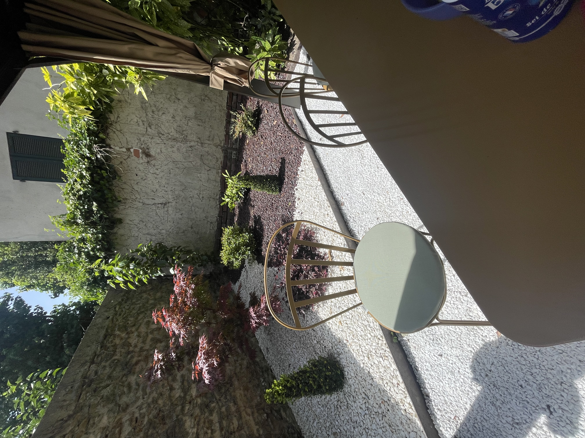

01
Visite & relevé
Vérification des limites cadastrales, repérage des contraintes (mur mitoyen, dénivelé, réseaux). On évoque les règles d'urbanisme locales (PLU).
Clôture bois pour la chaleur, panneaux rigides pour la robustesse, occultant pour l'intimité. À chaque besoin son matériau, à chaque terrain sa pose.

Notre savoir-faire
De la simple clôture grillagée au portail motorisé : on conçoit, on scelle, on aligne. Avec le bon outillage et le bon œil.
Pourquoi Metbach
Une clôture, ça se voit toute l'année. Niveaux, aplombs, espacements : on prend le temps.
Portail automatique posé et raccordé. Télécommandes, badges, visiophone : on configure tout.
On vérifie les bornes, on consulte vos plans, on tient compte du voisinage. Pas de litige.
Comment ça se passe
Bien clôturer, c'est d'abord bien implanter. Voici comment on aborde chaque pose.
Vérification des limites cadastrales, repérage des contraintes (mur mitoyen, dénivelé, réseaux). On évoque les règles d'urbanisme locales (PLU).
Bois, panneaux rigides, grillage souple, occultant : on vous présente les options avec leurs caractéristiques. Devis sous 48 h.
Implantation au cordeau, scellement béton des poteaux, mise à niveau. C'est l'étape la plus déterminante pour la durabilité de la clôture.
Fixation des panneaux ou lames, alignement, chapeaux, portails et serrurerie. Motorisation si demandée.
Questions fréquentes
Selon les communes, une déclaration préalable peut être exigée — surtout si la clôture donne sur la voie publique ou dans certaines zones protégées. On vérifie le PLU avec vous.
En général 2 m, mais cela dépend du PLU communal. Certaines zones imposent 1,80 m, d'autres plus. À vérifier au cas par cas.
Le bois est chaleureux mais demande un entretien tous les 5–10 ans. L'alu est sans entretien mais plus cher. Les panneaux rigides sont le meilleur rapport qualité/prix/durabilité.
Oui, sur la plupart des modèles. On choisit la motorisation adaptée (bras, vérins, coulissant) et on intègre la commande à distance.
Non — on pose en redans (par paliers) ou en pente continue selon la clôture choisie. C'est notre métier de gérer ces profils.
Zone d'intervention
On intervient principalement dans le Chablais, le Genevois français et le Pays de Gex. Pour les chantiers plus éloignés, on étudie sur demande.
Visite gratuite avec relevé de mesures.